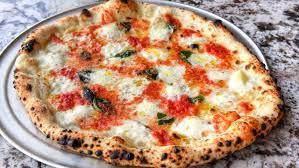

Pizza Recipe

This is a recipe list of ingredients needed to make delicious pizza, my way.
Note: Some of these ingredients can be interchangeable and changed to
your liking.
Ingredients:
- Dough
- Shredded Mozzarella Cheese
- Marinara Sauce
- Garlic
- Butter
- Pepperoni
Steps:
- First, preheat oven to 475.
- Here is a pizza dough recipe as i usually buy one already made.
- Mix melted butter with minced garlic in bowl to make garlic butter for crust.
- Start by using a spoon to apply marinara sauce in a circular direction on the dough.
- Apply as much cheese as you'd like to your pizza.
- Place pepperoni around pizza.
- Next up, grab your garlic butter and use a brush to apply it around the crust of the pizza.
- Place pizza into oven for 15, while consistenly checking to make sure it doesn't burn.
- After your pizza finally looks ready in the oven, take it down and let it cool for about 5 minutes.
- Now you finally have your delicious pizza and are ready to eat!